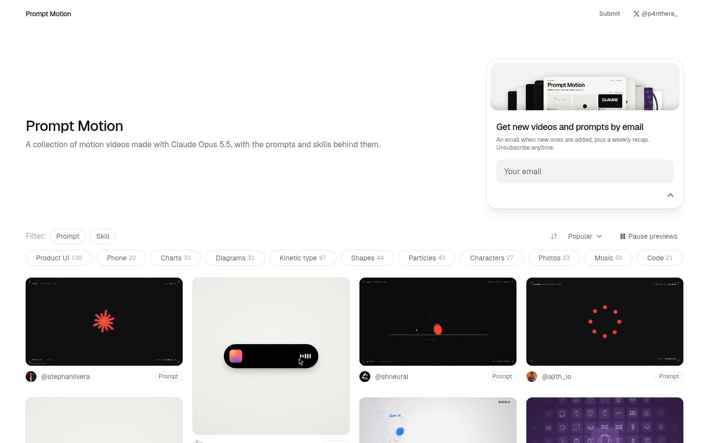
这是什么网站
Prompt Motion
A collection of motion videos made with Claude Opus 5.5, with the prompts and skills behind them.
——一个用 Claude Opus 5.5 制作的动态视频合集，并附上背后的提示词和 skill。
Prompt Motion 是 p4n（@p4nthera_）搭建的一个画廊站：把 X 上大家晒出的「用 Claude Opus 5.5 做的动态图形视频」收集到一起，每条视频旁边放上作者公开的提示词（Prompt）或 skill 安装方式，并注明作者、原帖链接、所用模型、迭代轮数与技术栈。抓取时共 233 条，来自 216 位作者，发布日期从 2026-09-23 到 2026-10-08；全部条目的模型字段都是 “Opus 5.5”。
站点结构（界面文字中译）
| 原文 | 中文 |
|---|---|
| Submit | 投稿（弹窗：“Submit a video — Know a motion video made with Claude Opus 5.5? Send the post on X.” 知道用 Claude Opus 5.5 做的动态视频？把 X 帖子发过来。字段：Post URL（帖子链接）、Where's the prompt or skill?（提示词或 skill 在哪？可选，填帖子、gist 或仓库）。提交后：“Thanks, it's in the queue — I'll take a look. If it fits the gallery, it'll show up here with the creator credited.” 已进入队列，合适的话会署名收录。） |
| Get new videos and prompts by email | 通过邮件获取新视频与提示词——「有新条目时发邮件，外加每周回顾。可随时退订。」 |
| Filter: Prompt / Skill | 筛选：提示词 / Skill |
| Popular / Recent | 排序：热门 / 最新（默认热门） |
| Pause previews | 暂停预览（网格里的视频默认自动播放） |
| Product UI · Phone · Charts · Diagrams · Kinetic type · Shapes · Particles · Characters · Photos · Music · Code | 内容标签：产品 UI · 手机 · 图表 · 示意图 · 动态字体 · 形状 · 粒子 · 角色 · 照片 · 音乐 · 代码 |
| 详情页：Prompt / Copy · “This prompt was taken directly from @xxx’s post.” · Model · Iterations · Stack · Posted · View post · View repo | 提示词 / 复制 ·「此提示词直接取自 @xxx 的帖子」· 模型 · 迭代（One-shot 一次成型 / A few rounds 几轮 / Many rounds 多轮）· 技术栈 · 发布日期 · 查看原帖 · 查看仓库 |
| Videos and prompts belong to their creators, linked on each entry. Curated by @p4nthera_ | 视频与提示词归各自作者所有，每条均附链接。策展：@p4nthera_ |
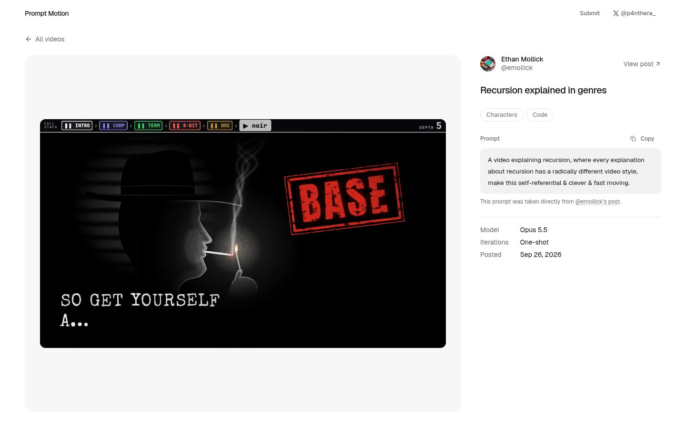
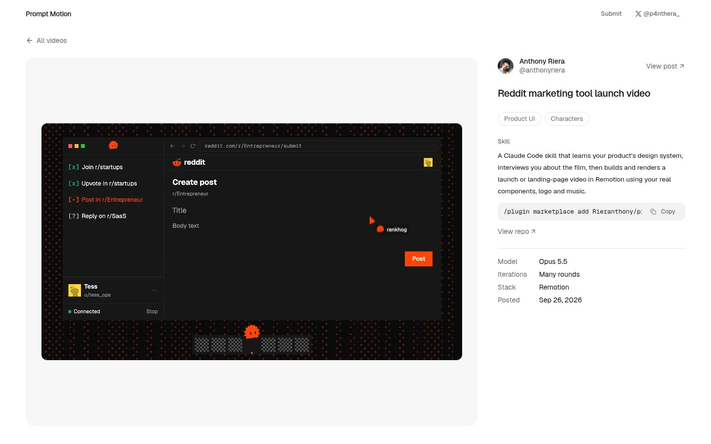
分类与数据概览
以下数字全部来自抓取时（2026-10-09）原站页面内嵌数据，站点会持续增加条目。
- 条目 233 条：提示词类 230 条、Skill 类 4 条（其中 1 条同时带提示词和 skill）。
- 迭代轮数：一次成型 90 条、几轮迭代 6 条、多轮迭代 1 条，其余 136 条未标注。
- 含英文「作品集」原句 “what an incredible motion designer you are” 的提示词 75 条；使用
<inputs>…<build>结构化长提示词的 10 条；提示词超过 1,000 字符的仅 15 条——大多数提示词都很短。
| 标签 | 原文 | 条数 |
|---|---|---|
| 产品 UI | product-ui | 100 |
| 手机 | phone | 22 |
| 图表 | charts | 33 |
| 示意图 | diagrams | 31 |
| 动态字体 | kinetic-type | 97 |
| 形状 | shapes | 44 |
| 粒子 | particles | 43 |
| 角色 | characters | 27 |
| 照片 | photos | 23 |
| 音乐 | music | 50 |
| 代码 | code | 21 |
标注了技术栈（Stack）的 56 条中：
| 技术栈 | 条数 |
|---|---|
Remotion | 12 |
HyperFrames | 9 |
HTML | 9 |
Three.js | 5 |
JavaScript | 5 |
HTML + Playwright | 3 |
OpenEdit | 1 |
Manim, edge-tts | 1 |
HTML canvas + Playwright + ffmpeg | 1 |
Python + ffmpeg | 1 |
HTML, Playwright | 1 |
SVG/Canvas | 1 |
HyperFrames + GSAP | 1 |
Python | 1 |
WebGL2 + Canvas 2D + Web Audio | 1 |
HTML/JS, Playwright, ffmpeg | 1 |
Blender | 1 |
Remotion, React | 1 |
Canvas | 1 |
「简历作品集」一句话提示词：站内最常见的起点
Claude motion designer showreel｜Claude 动态设计师作品集
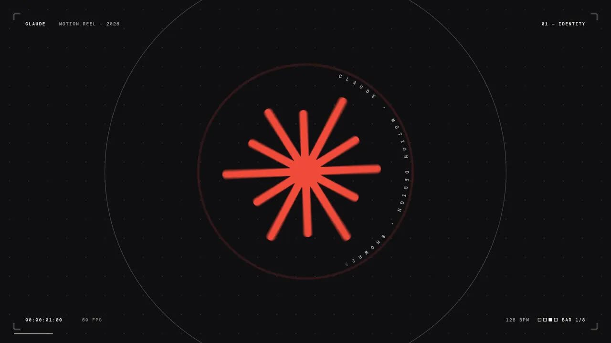
make a dynamic 15-second motion graphics video that shows what an incredible motion designer you are, like it's your showreel for a résumé. go all out.中文译意：做一段动感的 15 秒动态图形视频，展示你是一个多么出色的动态设计师——就像简历上附的作品集（showreel）。全力以赴。
这条是站点默认「Popular」排序下的第一条。同一句话（或改成 30/40 秒、换成为某产品做宣传、译成中/日文）在站内反复出现：抓取时有 75 条提示词包含英文原句 “what an incredible motion designer you are”，另有中文、日文改写版。它几乎成了用 Opus 5.5 做动效的「Hello World」。
Dub promo video｜Dub 宣传片
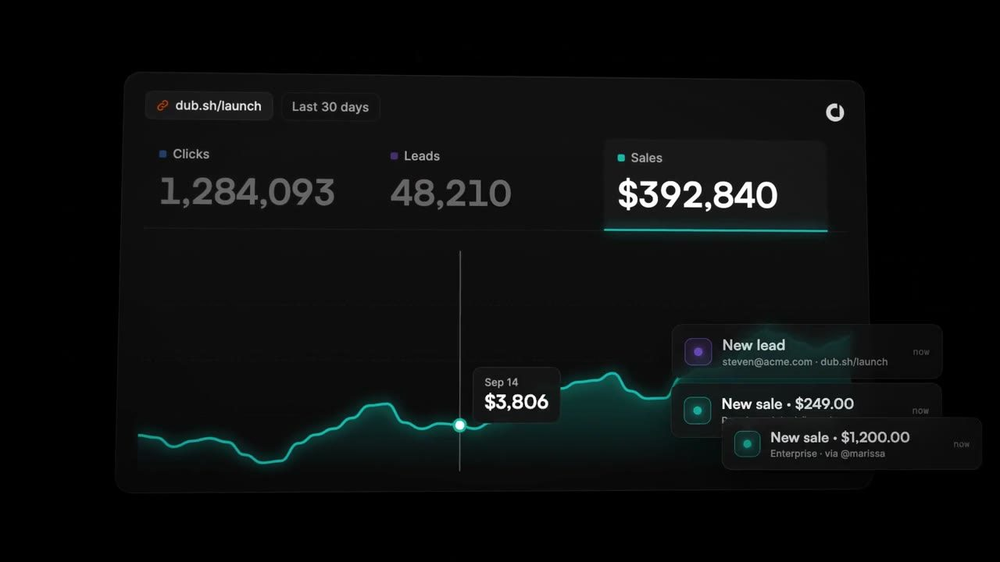
make a dynamic 15-second motion graphics video that shows what an incredible motion designer you are, like it's your showreel for a résumé. go all out.
it should be a launch saas video for https://dub.co中文译意：同上一句「作品集」提示词，末尾只加一行：「它应该是 https://dub.co 的 SaaS 发布视频」。说明在通用提示词后面补一句具体产品/网址，就能把「炫技片」变成产品宣传片。站内大量 Product UI 条目（100 条）都是这种「作品集提示词 + 产品名/网址」的变体。
结构化长提示词：把动效拆成 inputs / direction / structure / build / gotchas
少数条目（抓取时 10 条）使用了同一种 XML 风格的长提示词骨架：<inputs>（先向用户要素材）→ <direction>（美术方向与禁用清单 Banned）→ <structure>（按 BPM/拍点写分镜）→ <build>（工程实现：单 HTML 文件、一切由 seek(t) 纯函数计算、闭式弹簧、Playwright 逐帧渲染 + ffmpeg 运动模糊）→ <gotchas>（踩坑）→ <start>（先给拍点图/关键静帧再写全片）。这与本库「代码即影片」的思路一致：确定性的 render(t) 加逐帧截图。
Shape morphing through UI states｜一个形状贯穿所有 UI 状态
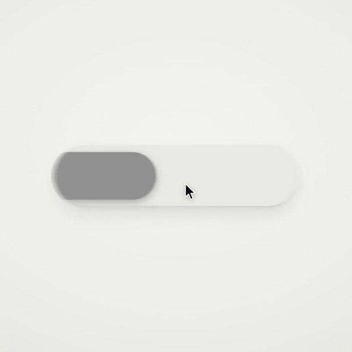
展开原始提示词（英文原文，2,706 字符）
<inputs>
Ask me for: 8 to 12 UI states I want the shape to become (e.g. button, loader, player, slider, toggle, tabs, chart, command palette, toast), pure black and white or one accent color, and a royalty-free song around 120 BPM (e.g. Mixkit, free for commercial use).
</inputs>
<direction>
Dribbble-level UI motion. One shape, never cut: every state is the same element morphing its size, radius and color while its content swaps with a short blur. A cursor drives every change with real clicks and drags. Light warm-gray canvas, black and white components, one clean UI font (Geist). Springs everywhere, a tiny overshoot at most. The camera zooms so each state fills the frame. The last frame is the first frame, so it loops.
Banned: bouncy easing, particle bursts, glows, gradients on UI chrome, mismatched icon strokes, dead time, anything that looks like a template.
</direction>
<structure>
120 BPM, 7 bars, something happens on every beat.
Button → loader → check → dynamic island → music player with a play/pause morph → scrub the progress bar → it becomes a volume slider that stretches when dragged past max → a toggle flips on the beat → the knob becomes a liquid tab indicator → the tabs open into a chart that draws itself, with a tooltip on hover → it collapses into ⌘K → type to filter → enter → toast → back to the button.
</structure>
<build>
1. One HTML file, square 1440x1440. Every style is computed from time inside seek(t): no CSS transitions, no timers, no state carried between frames.
2. Springs are closed-form step responses. A value that changes target many times is the sum of one spring per change, so it stays a pure function of time.
3. The tab indicator's two edges ride different springs, so the leading edge stretches ahead of the trailing one. Same trick for the toggle knob.
4. Drags are direct manipulation: while the cursor is held, the value is computed from its position. On release it springs back from wherever it was.
5. Analyze the song with numpy for the beat grid and start on a downbeat. Place every UI sound by its measured peak.
6. Render with Playwright: 4 subframes per frame, blended with ffmpeg tmix for motion blur at 60fps.
7. Render one frame per beat before the full render. Fix anything off the grid, cramped or hard to read.
</build>
<gotchas>
Never put will-change on anything the camera scales or the text renders blurry. Text that swaps inside a morphing container needs its own enter and exit timing or it overlaps. Make the last frame identical to the first, cursor position and speed included, or the loop stutters.
</gotchas>
<start>
Ask me for the inputs, then show me the state list on the beat grid before you write any code.
</start>中文要点：
- inputs：先问用户要 8–12 个想让形状变成的 UI 状态（按钮、加载器、播放器、滑块、开关、标签页、图表、命令面板、toast 等）、纯黑白或一个强调色、一首约 120 BPM 的免版税音乐（如 Mixkit）。
- direction：Dribbble 级 UI 动效；一个形状、永不剪切，每个状态都是同一元素在变尺寸/圆角/颜色，内容用短暂模糊切换；光标用真实点击和拖拽驱动每次变化；暖灰画布、Geist 字体；全程弹簧、最多轻微过冲；镜头缩放让每个状态填满画面；末帧＝首帧以便循环。禁用：弹跳缓动、粒子爆发、发光、UI 渐变、图标描边不一致、空档、模板感。
- structure：120 BPM、7 小节、每拍都有事发生：按钮→加载→对勾→灵动岛→音乐播放器→拖进度条→变音量滑块（拖过最大值会拉伸）→开关→液态标签指示器→展开成自绘图表→收成 ⌘K→输入筛选→回车→toast→回到按钮。
- build：单个 1440×1440 HTML；所有样式在
seek(t)内由时间计算，不用 CSS 过渡/定时器/跨帧状态；弹簧用闭式阶跃响应，多次换目标就叠加多个弹簧；标签指示器两条边用不同弹簧（前缘先拉伸）；拖拽时值由光标位置直接算、松手后回弹；用 numpy 分析歌曲拍点并按峰值放置音效；Playwright 渲染，每帧 4 个子帧用 ffmpeg tmix 混合出 60fps 运动模糊；先每拍渲一帧检查。 - gotchas：被镜头缩放的元素别加
will-change（文字会糊）；变形容器里切换的文字要有独立进出时序；首末帧（含光标位置和速度）必须一致，否则循环卡顿。
Photo print app launch film｜照片打印 App 发布片
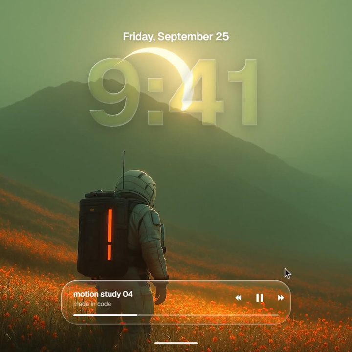
展开原始提示词（英文原文，5,217 字符）
<inputs>
Ask me for: a one-word brand name for the wordmark (a verb works best), 9 to 12 high-res photos, a royalty-free song around 120 BPM with a drop and a quiet breakdown (Mixkit, free for commercial use), and a free stock clip of a plain wall with moving plant shadows (Pexels).
</inputs>
<direction>
An Apple-keynote launch film, 2D only, one continuous take. Every scene is made out of the previous one: nothing fades, blurs or cuts. Objects change shape instead: text rises out of a mask line, icons pop from zero on a spring, bars draw across, pages push, and a black shape floods the whole frame and contracts into the next scene. Warm off-white canvas, black UI, iOS 26 liquid glass over the photos. Archivo (wdth 125, weight 800) for the wordmark, Geist for UI. A cursor drives every change with real clicks, drags and long-presses. The camera zooms screen-studio style so each moment fills the square, and the cursor scales with it.
Banned: crossfades, blur-ins, brightness "developing", 3D flips, particles, glows, holds longer than 1s, anything that looks like a template.
</direction>
<structure>
120 BPM, 54 beats, something happens on every beat.
Open: the wordmark squeezes into its own period like an accordion, the dot grows into a black pill, a label rises inside it. Click: six iris blades close over the label and snap open onto a photo. The circle becomes a square, shrinks, the grid unfolds from behind it like a paper map (center, plus, corners), reflows into a bento, and a click zooms into one tile, landing exactly on the drop.
Glass: a glass word pops in letter by letter, melts into a droplet that stretches into a glass toolbar. The adjust icon turns it into a slider. Dragging relights the photo from day to golden hour (two aligned shots), and the knob turns into a glass lens while held. It lifts into a glass orb, the next photo opens inside it as a circle, and the orb expands into a lock screen: glass clock digits, date, and a home bar that stretches into a glass music player.
Stage: the lock screen pulls back into a phone (the bezel grows out of the screen edge). The Dynamic Island stretches like liquid, pinches off, flies over and grows into a Mac window that rolls up like a blind. Long-press the wallpaper, drag it onto a Safari tab, the page pushes in, drop it and it becomes the hero of a landing page. Scroll: the hero morphs into a framed print on a product card, with the mat and molding growing out of the photo's edge. Pick a frame color (it paints across) and a size, then the nav button flies down into "Order print".
Order: one black shape keeps morphing: Ordered ✓ → Printing % → On its way (a van on a route) → Delivered ✓.
Wall: the delivered circle floods the frame edge to edge, holds black for a beat, and contracts into the framed print hanging on the real wall footage. The same iris opens onto the print, closes again, the frame floods the screen and contracts into the pill → the dot → the letters spring back out, landing on the beat return. Last frame = first frame.
</structure>
<build>
1. One HTML file, square 1440x1440. Every style is computed from time inside an async seek(t): no CSS transitions, no timers, no state between frames.
2. Springs are closed-form step responses. A value with many targets is the sum of one spring per change, so it stays a pure function of time.
3. Liquid glass: each glass element holds its own clone of the scene behind it, filtered with an SVG feImage displacement map (a rounded-rect distance field) through three feDisplacementMaps at slightly different scales for chromatic edges, plus a rim light. Glass letters: a canvas distance field per glyph gives the map, mask and highlights.
4. Goo: blur + alpha threshold, then composite the source atop it so the glass stays sharp inside.
5. Iris: 6 blades around a hexagonal aperture. Each blade is its two vertices, both edge extensions and the SHORT arc between them.
6. Wordmark squeeze: every letter moves toward the dot by the same factor and its drawn width follows (narrow the wdth axis, scale the rest), so the letters stay touching.
7. Footage: re-encode all-intra (ffmpeg -g 1), load it as a blob URL, await 'seeked' before drawing each frame.
8. Sound: a downloaded SFX for every event (Mixkit), never synthesized, each placed by its measured peak. The song starts on a downbeat: the zoom lands on the drop, the wall sits in the breakdown, the wordmark returns with the beat. Loudnorm to -14 LUFS.
9. Render with Playwright: 4 subframes per frame blended with ffmpeg tmix, 60fps. Check one frame per beat, then scan for single-frame pops (frame-difference spikes 3x their neighbours).
</build>
<gotchas>
backdrop-filter: url() misreads displacement maps in Chromium, so clone the scene instead. A flood must overscale past the corners and take about 0.3s, or half the screen changes in one frame. A child with visibility: visible shows through a hidden parent, so use inherit. Text that swaps inside a morphing shape needs its own mask. python http.server can't range-seek video, so use the blob URL.
</gotchas>
<start>
Ask me for the inputs, then show me the beat map and 4 stills (open, glass, stage, wall) before you write the full film.
</start>中文要点：同一作者的更复杂版本（30 秒左右、54 拍）。要求「苹果发布会式」2D 一镜到底：每个场景都由上一个场景变形而来，不淡入淡出、不模糊、不切；暖白画布 + 黑色 UI + iOS 26 液态玻璃。分镜覆盖：字标挤进句点→黑色胶囊→光圈叶片开合→照片网格像地图一样展开→液态玻璃工具栏与滑块把照片从白天调到黄金时段→锁屏→手机→灵动岛飞成 Mac 窗口→拖到 Safari 成为落地页主图→变成带画框的打印品→下单状态（已下单 ✓→打印中 %→运输中→已送达 ✓）→挂到真实墙面素材上→回到开头。build 部分给出了液态玻璃（SVG feImage 位移贴图 + 三层 feDisplacementMap 做色散边缘）、goo 效果、六叶光圈几何、全 I 帧视频解码、Mixkit 音效按峰值对齐、响度归一到 -14 LUFS、逐帧差分查「单帧跳变」等具体实现细节。
Orange dot motion system｜橙色圆点动效系统
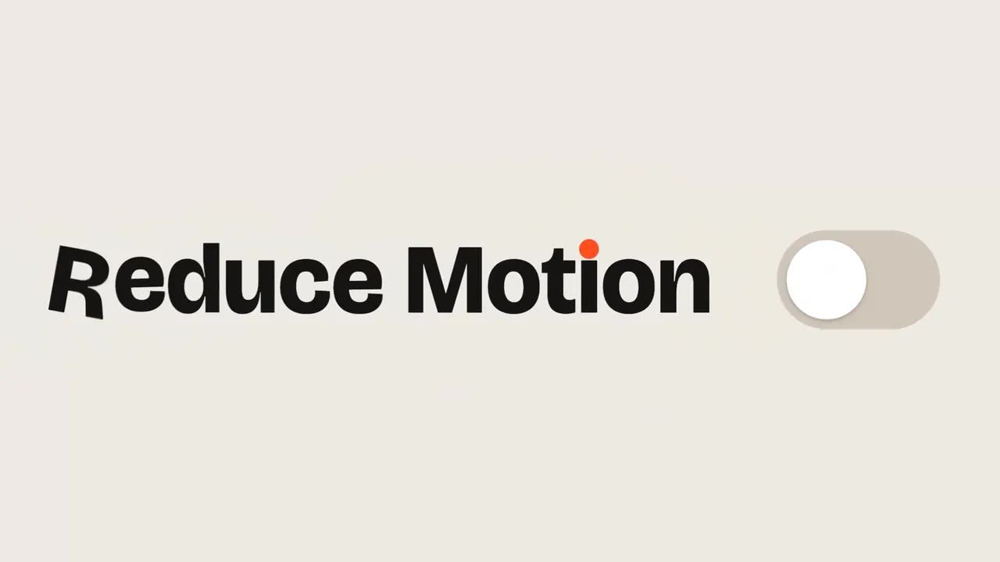
展开原始提示词（英文原文，3,362 字符）
<inputs>
Ask me for: a short label for the opening toggle, one hero word, a percentage for the graph, the text for the final card, one accent color, and a track with a clear beat.
</inputs>
<direction>
A 2D motion design film in 16:9. Use a warm off-white canvas, near-black backgrounds, bold typography and one vivid orange accent. The orange dot connects every scene: it starts in the UI, becomes the dot over a letter, traces a spring graph, grows into a shape and returns on the end card. A cursor makes the opening click feel real. Keep the motion sharp and controlled, with small spring overshoots and no dead time.
Banned: stock footage, gradients, glows, particle bursts, random transitions and motion that isn't connected to an element already on screen.
</direction>
<structure>
Around 15 seconds, with a visual change on every major beat.
Open: a cursor clicks the orange toggle beside "Reduce Motion". The letters bend and move into place until only "Motion" remains, with the orange dot above the "i".
Spring: the dot jumps away from the word and lands on a graph. Its path draws a spring response, overshoots the target and settles beside a "+22%" callout.
Shape: the dot shoots across a line, grows into an orange circle and fills the frame. A black rounded square rotates inside it, then stretches into a pill. The scene contracts to a single orange dot on black.
Type: words like "SPRINGS", "EASING", "KINETIC TYPE", "3D" and "SOUND" orbit the dot. The circle of type opens out into a field of tiny dots.
Reveal: the halftone field expands and flips to black, revealing the final card: "Opus 5.5", "Motion designer." and "0 keyframes".
Return: the orange dot moves back through the halftone, graph and toggle. Match the final frame to the first so the video loops cleanly.
</structure>
<build>
1. One HTML file, 1920x1080 at 60fps. Compute every visual from time inside seek(t): no CSS transitions, timers or state carried between frames.
2. Use closed-form springs for the toggle, bouncing dot and graph. Draw the graph from the same spring function that moves the dot.
3. Animate letters individually for the "Reduce Motion" to "Motion" transformation. Keep the orange dot attached to the "i" until it begins its jump.
4. Make the orange circle, rotating square and pill different states of the same shape. Preserve its position and motion through each transformation.
5. Place the orbiting words along a circular path, then move their letters outward to hand the frame over to the halftone grid.
6. Draw the halftone as a grid of dots whose sizes respond to the orange dot. Let it grow past the frame edges before revealing the end card.
7. Sync the click, dot landing, graph peak, shape changes and final title to measured beats. Render one frame per beat to check the pacing before the full export.
</build>
<gotchas>
The graph and dot must follow the same motion or the spring will feel fake. Keep the orange accent consistent across every scene. Give outgoing and incoming text separate timing so letters don't overlap. When a shape fills the screen, scale it past all four corners. Match the cursor, dot and typography in the first and last frames to avoid a loop stutter.
</gotchas>
<start>
Ask me for the inputs, then show me the beat map and four stills (toggle, graph, kinetic type, end card) before building the full video.
</start>中文要点：16:9、约 15 秒的 2D 动效短片，用一个橙色圆点串起所有场景：光标点击 “Reduce Motion” 开关→字母弯折归位只剩 “Motion”，圆点落在 i 上→圆点跳到图表上画出弹簧响应曲线并停在 “+22%” 旁→变成铺满画面的橙圆、内部旋转的黑色圆角方块拉成胶囊→ “SPRINGS / EASING / KINETIC TYPE / 3D / SOUND” 绕点旋转→散成半调点阵→结尾卡 “Opus 5.5 / Motion designer. / 0 keyframes”→倒放回开头以循环。build 强调：图表与圆点必须用同一个弹簧函数，否则「弹簧会显得假」。
Launch video remake comparison｜发布视频复刻对比
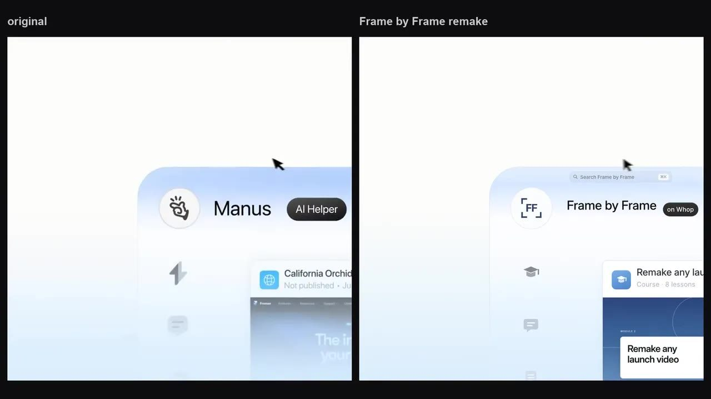
展开原始提示词（英文原文，10,414 字符）
<inputs>
Ask me for: my product name, a logo (or let you draw a simple mark), my brand colours (or pull them from my logo), the one-line thing a user types into the prompt box, the page that answers it (title + 2–3 sentences with one key phrase), two feature names for the stacked cards, and a music track. If I skip any, use the defaults: product "Frame by Frame" living inside its Whop hub, a viewfinder mark (four corner brackets around a bold "FF"), prompt "Make a launch video for my app", a lesson page titled "2.1 Choose a reference", cards "Launch" and "Sound", and Mixkit's free house track "Rising Forest" slowed to 124 BPM.
</inputs>
<direction>
A 12 second square product sting, 1080x1080, frame numbers at 29.97 fps (f0–f359), master rendered at 59.94 fps. Apple-keynote feel: soft, white, bright blue, glassy. The camera never cuts on a still frame: every shot enters already moving (exponential ease-out, 12–19% of the remaining distance per frame) and leaves on an accelerating move or a blur ramp. Blur follows speed and direction on every move.
Palette: my brand colours mapped onto these roles; if I give none, use page #FDFDFB, haze #B7CFEB, ice #E6F0FA, deep blue #294376 → #769CC2 sky gradient, navy #1E2F52, accent blues #2F6BFF / #3CC8F0 / mint #4ED6A0, white. Type: Inter (400/500/600/700). No purple, violet, magenta or orange anywhere.
Story: the product header rises out of a blue haze inside a light app window → a cursor glides in, turns to face where it's going, grows on hover and clicks the logo → hard cut on the music drop to the app icon with four squares orbiting into a cross → the icon collapses into a Mac menu bar → the cursor clicks the menu-bar icon, a frosted glass prompt box springs out and the prompt types → whip-tilt up through a light-blue flash into the answer page scrolling into place → a card rises over it → blur-dissolve to two stacked cards with giant frosted-glass titles → blur-dissolve to the lone logo disc → hard cut to a black end card with a glowing wordmark.
Banned: crossfades, frozen frames (except one hold in S7), stock UI kits, glows on UI text, Math.random, anything that looks like a template.
</direction>
<structure>
Coordinates are px on the 1080 stage. Music beat k = 0.048 + 0.4838·k s (124 BPM, one beat = 14.5 frames). The three hard cuts f72, f101, f159 land 2 frames before a beat: keep these exact frames.
S1 f0–71, header + window + click: haze #B7CFEB fading to #FDFDFB by f28, keep a blue floor glow #DBEEFD at the bottom. Header on one line: logo disc ⌀132 (#FBFCFE, 1px rim #E8E8EA, dark mark), the product name (Inter 500), a dark capsule pill "on Whop" (#2F2E2F, white text); the whole lockup spans x474–1063, centre line rises y932 (f0) → 776 (f2) → 683 (f5) → 608 (f10) → 546 (f24) → 536 (f37), drifting 1 px/frame after. Name appears f2 blurred, pill f4–5 heavily blurred and sliding 15 px left as it sharpens. A light hub window (radius 93, fill #FCFDFF, top band #F1F6FF, blue inner floor glow) fades in around it: opacity 0 to f14, 0.53 f15, 0.7 f19, 1.0 f24; top-left corner (408,405), runs off the right and bottom. Inside: a search pill in the top band, a left icon column (Courses icon at (537,739), faded Chat icon at (537,900)), and a course card from (764,700) off-frame with its cover image, title and "Course · 8 lessons". Cursor (black macOS arrow, white outline, 32x39) appears f27 at (891,393), glides left decelerating to (770,383) f44, rotates to point down-left f47–51 as it dives, lands on the disc's lower right (629,564) f56 → (587,546) f59 → (555,531) f71; grows ×1.55 on hover from f56; a soft ice ring (#D5F3FF → #F7FEFF, outer ⌀174) lights around the disc from f53. Camera zooms about (540,540): 1.0 f46 → 1.2 f60 ease-in-out, holds f61, then eases out accelerating to 1.04 at f71 while the cursor presses (shrinks 15% f69–71).
S2 f72–100, icon + orbit: navy squircle app icon (#294376 → #1E2F52, white mark), 276 px at f72 shrinking ease-out to 178 px by f86, radius 28% of width, on a grey halo disc #E9E9E7 growing ⌀240 (f75) → 326 (f86). Four 92 px squares (radius 26) spin in counter-clockwise, decelerating, and lock into a cross at orbit radius ≈216 by f86: white (1px #E3E8EF edge + faint shadow) left, #2F6BFF top, #3CC8F0 right, #4ED6A0 bottom. f88–100: the icon shrinks accelerating to ≈40 px, the squares slide into a row on its right (white slips behind the icon), blur ramps 0.3 → 6 px.
S3 f101–158, menu bar + prompt: white page above a black laptop bezel band (y425–475, top highlight #686866), a dark navy menu bar (y477–538), wallpaper below = the blue sky gradient with thin white line art (one big circle, two horizontal lines, one vertical, a four-point sparkle at a crossing, soft teal glow top-right). Menu bar right cluster in white: Wi-Fi, battery, toggles, the product mark at x531–584, three ⌀36 dots #2F6BFF / #3CC8F0 / #4ED6A0 at x612, 661, 709, "Mon Jun 22 9:41 AM" 34 px. Enters blurred 3 px and settling by f110. Cursor rises from below (f102), sits on the mark, presses f113–117. Camera pans content right +125 px f115–130 (fastest f118–120). A frosted glass box (white-blue glass over the sky, bright top rim, radius 60) springs out from under the mark f116: width peaks 744 at f126 and settles 726x228 by f138 around x196–922, y568–797. The prompt types from f121 (first legible "Make ") to f150 (complete) at about 1 char/frame with a 1-frame hold every 2–3 chars; caret always on; three white outline icons along the bottom; send button #2F6BFF ⌀51 with a white up arrow. From f136 the whole scene drifts up, accelerating into a whip-tilt (f158 moving ≈25 px/frame, vertical blur ≈6–8 px) while the page tints #E6F4FE over f154–158.
S4 f159–186, answer page: a light course lesson page (breadcrumb, title, body): text column x120, body 47 px Inter 400 grey #BCBCBA, line pitch 58, one key phrase ("frame for frame") in black 600. It arrives smeared and 420 px low, scrolls up with offsets 420, 315, 210, 170, 140, 116, 96, 81 (f166) … 14 (f175) … 0 (f180), then creeps −6 px by f186. Blur 24 px (f159) → 1.5 (f165) → 0. Flash #E2F4FE fading to #FDFDFB by f165. A cursor pointing straight up rides the scroll and stops under the key phrase (≈(450,591) f180), then drifts right.
S5 f187–214, card: a white card (x203–878, runs off the bottom) rises over the page: cover image 627x536 inset 24 px, radius 64, a light grabber bar at its top centre, caption semibold 38 px black, sub-caption grey 23 px. Cover top y642 (f187) → 456 (f191) → 395 (f196) → 369 (f200) → 348 (f205), then keeps drifting up ~4 px/frame. Card blur peaks 3.8 px at f189, sharp by f201; the page behind blurs to ≈2.5 px. Exit f207–214: card shrinks ~5% and rises while the whole frame blurs 1 → 7 px; cut at the blur peak.
S6 f215–244, two cards: white page, two stacked cards 538x348 (radius 57, gap 36) centred on x540, top card settling at y168 by f230, bottom at y552. Each: cover art (no text baked into it), a frosted pill top-left ("Module 3" / "Module 5"), a frosted round "•••" top-right, and a huge bold title along the bottom edge made of frosted glass (a blurred, lightened copy of the image clipped to the letters, cut off by the card's bottom edge): "Launch" and "Sound". Both enter blurred 12 px and sharp by f224; the top card enters 8% large and rises from y264; the bottom card rises from y927, staggered behind it. They drift up 3 px/frame f230–238, then accelerate up and blur out into the cut.
S7 f245–300, logo disc: page #FDFDFB, disc ⌀168 #F6F6F6 with the dark mark, rises into the centre (top y569 f245 → 491 f250 → 468 f255 → 456 f269) with a vertical smear on the cut frame, holds still f269–287 (the only frozen stretch), then shrinks accelerating to ⌀123 at f300.
S8 f301–359, end card: black radial background (#020204 corners, ≈#272729 around the word), the wordmark in Inter 600, white #F3F3F5 with a tight glow plus a wide soft halo, centred (540,540). Word width: ≈1650 px f301 (horizontally smeared, zoom streaks) → 1350 f302 → 1110 f303 → 1049 f304 → 734 f309 → 678 f311 → 563 f320 → 516 f342 (≈1 px/frame shrink) → 492 f350, then collapses ease-in: 450 f355 → 267 f359 with blur rising to 3.5 px. The film ends mid-collapse.
</structure>
<build>
1. One HTML page, 1080x1080, drawn by seek(t) as a pure function of the frame number. No CSS transitions, no timers, no Math.random (seeded hashes only). Shots register as {f0, f1, render(localFrame)}.
2. Every value is continuous in the frame number (the 59.94 master renders half frames): animate with keyframe tables kf(frame, [[f, value], ...], ease) and per-frame lookup tables with linear interpolation. No Math.floor on motion.
3. Blur: CSS filter blur for round blur, SVG feGaussianBlur with separate x/y stdDeviation for directional smears. Zoom smear on the end card = 20–30 scaled, faded copies of the word. Frosted glass = a blurred, lightened copy of what's behind, clipped to the shape.
4. Cursor: one SVG macOS arrow (black fill, white outline, soft shadow) with rotation and scale, reused in S1, S3, S4.
5. Sound (no voice), exactly 12.075 s: music at 124 BPM, soft intro, the drop at 2.47 s (beat 5, the f72 cut leads it by 2 frames). Synthesized SFX: soft impact 0.10 s; whooshes peaking at the cuts 2.402, 3.370, 5.305, 10.043 s; transition hits exactly on 6.240 s and 8.175 s; clicks at 2.33 and 3.83 s; very quiet key ticks every ~32 ms over 4.04–5.00 s; a soft shimmer at 10.05 s. Master to −14 LUFS, true peak −1 dBTP, no fade except the last 60 ms.
6. Render with Playwright (one screenshot per frame, fonts loaded first), encode H.264 yuv420p at 60000/1001, mux the audio.
</build>
<gotchas>
Measure text only after the fonts load. A long product name won't fit where a 5-letter name did: scale the whole lockup (disc gap, name, pill) to fit the span x474–1063, don't let the pill fall off-frame. A white orbit square vanishes on the white page without a 1px edge and a faint shadow. Don't put images with their own text inside the S6 cards, or the glass title doubles up. Keep the cut frames exact even where they don't sit on a beat. Nothing freezes except S7 f269–287. Heavy blur tables can wipe a shape out completely: if a frame looks empty, lower the blur until the shape still reads.
</gotchas>
<start>
Ask me for the inputs. Then show me 4 stills (f40 header in the window, f86 icon cross, f150 finished prompt, f230 the two cards) before you render the full film.
</start>中文要点：站内最长的提示词之一（10,414 字符）。要做一支 12 秒、1080×1080 的方形产品短片，逐帧写明 29.97fps 下的帧号（f0–f359）、59.94fps 母版、每个镜头进出都在运动中（指数缓出、每帧走剩余距离的 12–19%）、三个硬切点精确卡在拍前 2 帧、坐标以像素给出；用户不提供素材时用默认值（产品 “Frame by Frame”、取景框标志、Mixkit 曲目降到 124 BPM）。封面是「原片 vs 复刻」左右对比。
创意型短提示词：一句话出概念片
Recursion explained in genres｜用不同类型片讲「递归」
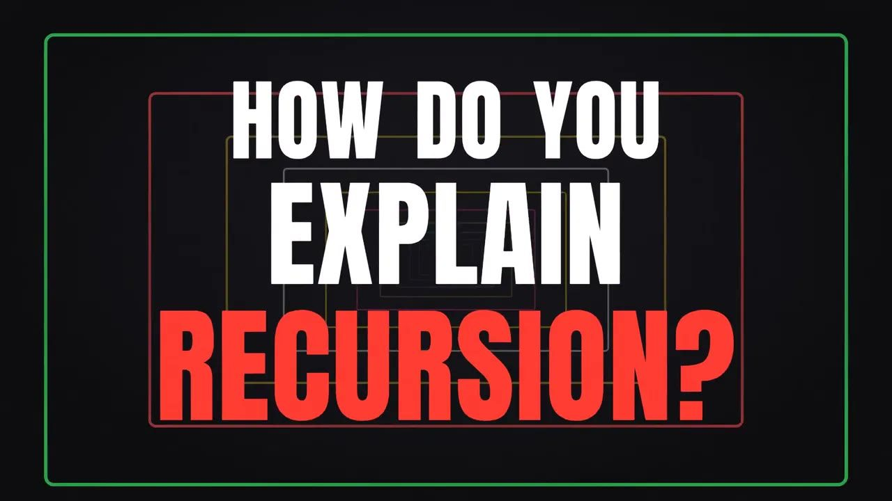
A video explaining recursion, where every explanation about recursion has a radically different video style, make this self-referential & clever & fast moving.中文译意：做一个解释递归的视频，其中每一段关于递归的解释都采用截然不同的视频风格；要自我指涉、巧妙、节奏快。
站点标注为「一次成型」。下图为本镜像从原视频（约 75 秒）每 6 秒抽取的关键帧：顶部始终有一条「调用栈」导航（INTRO › CORP › TERM › 8-BIT › DOC › noir…），右上角显示 DEPTH 深度；画风依次切换为企业宣讲、8-bit 游戏、自然纪录片、黑色电影、儿童动画（「里面还有一个更小的娃娃」）、漫画、电影预告（MUST GO DEEPER）、纯 HTML 页面（Base case）、电视购物（1-800-RECURSE）、终端（EXIT 0）等，最后逐层返回。
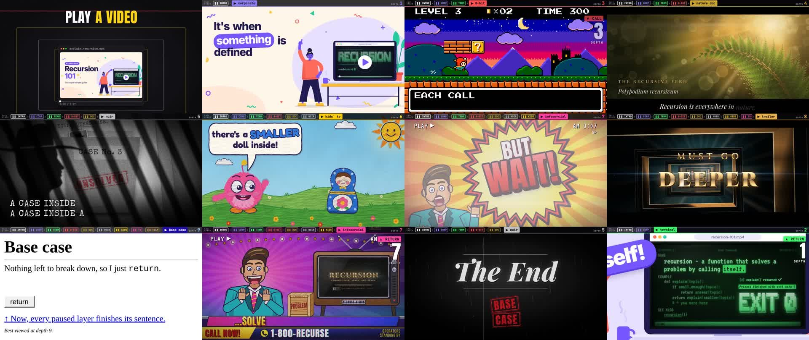
Four seasons train window｜火车窗外的四季
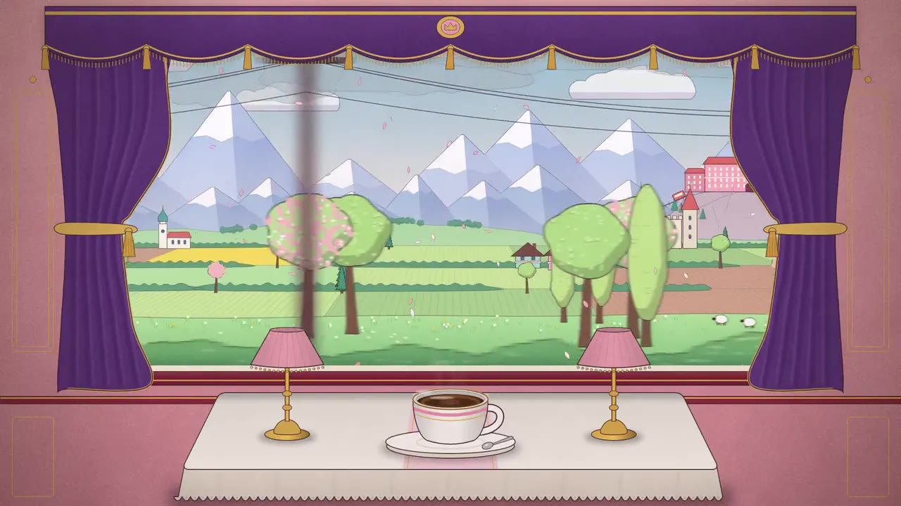
4 seasons passing outside a train window, a cozy carriage, a cup of coffee on the table, Grand Budapest Hotel style中文译意：火车窗外四季流转，一节温馨的车厢，桌上一杯咖啡，《布达佩斯大饭店》风格。
站点标注为「一次成型」，且没有内容标签。
History of AI timeline｜AI 历史时间线
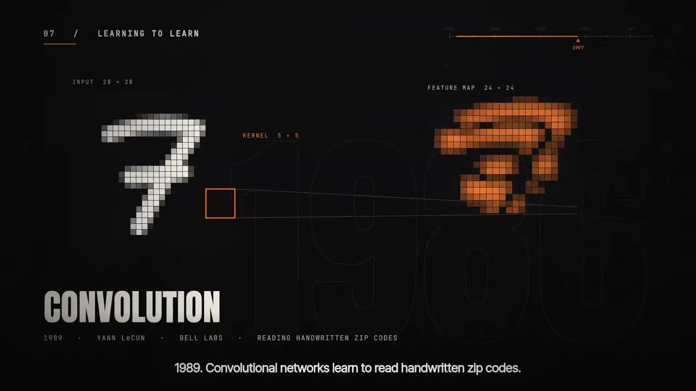
make a video highlighting key moments in the history of AI.中文译意：做一个视频，梳理 AI 历史上的关键时刻。
一句话、一次成型，原视频约 2 分 52 秒。截帧显示 1989 年卷积网络识别手写邮编一段（“CONVOLUTION”）。
Engraving-style Claude ad｜版画风 Claude 广告
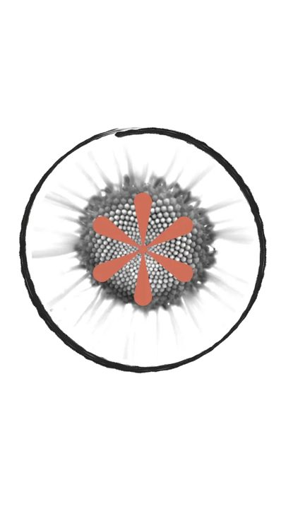
using any reference with a fast edit (5s video is enough)
Make a fast-paced ad for Claude, about 10–15 s (closer to 15). Reference video attached.
1. research:
- Study Claude's earlier brand designs first.
- Find every photo and asset that fits: artistic, editorial, whatever the idea needs.
2. design/direction
- An art reimagine: bold, light mode.
- Clean and perfect: no beige "artsy" look, no eyebrow labels.
- Paint elements on top of the images.
- Above all: fast-paced and very creative.
3. rules
- No slop. Study the reference closely: smoothness, timing, shot durations, fonts, elements.
- Take some inspiration and borrow techniques, but change the design overall, it should look like something you did completely on yourself with your own taste
- Every morph has to be perfect.
ideas: (since everything moves fast)
- Clean, varied Claude SVG animations
- Images small, bigger, several at once
- Morphing text
- Clean 3D animation
- Zooms
extra notes:
- Feel free to work 10+ hours
- Give me the final video, ending on the Claude logo.中文要点：附一段节奏很快的参考视频（5 秒即可），让 Claude 做一支 10–15 秒（接近 15 秒）的 Claude 快节奏广告。分三步：①研究——先研究 Claude 过往品牌设计，找齐合适的艺术/编辑类图片素材；②设计方向——艺术化重塑、大胆、浅色模式，干净完美，不要米色「文艺风」、不要小眉标，在图片上叠加绘制元素；③规则——不要 slop，仔细研究参考片的流畅度、时长、字体与元素，借鉴技法但整体设计要像「完全出自你自己的品味」，每个变形都要完美。点子：干净多样的 Claude SVG 动画、图片忽大忽小或多张同屏、文字变形、干净的 3D、缩放。附注：「可以干 10 个小时以上」，最后以 Claude 标志收尾。
讲解与教学类
Negroni recipe animation｜尼格罗尼配方动画
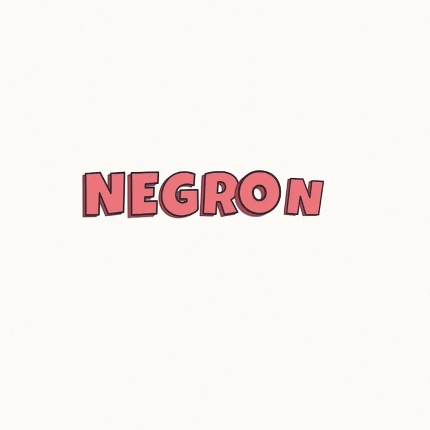
We're going to try a little test. Do you think you could render a recipe motion graphic animation using javascript or html (w/e you think will produce the best) to show the full recipe from start to finish (empty glass to completed cocktail) - Explainer video style - Showing the recipe ingreidents + measurements as they're going into the cup. Should be a 30s video.中文译意：我们来做个小测试。你能用 JavaScript 或 HTML（你觉得哪种效果最好就用哪种）渲染一段配方动态图形动画吗？从空杯到调好的鸡尾酒，完整展示整个配方——讲解视频风格——在原料倒入杯中时显示原料和用量。时长 30 秒。
Animated business explainer｜企业动画讲解片（模板）
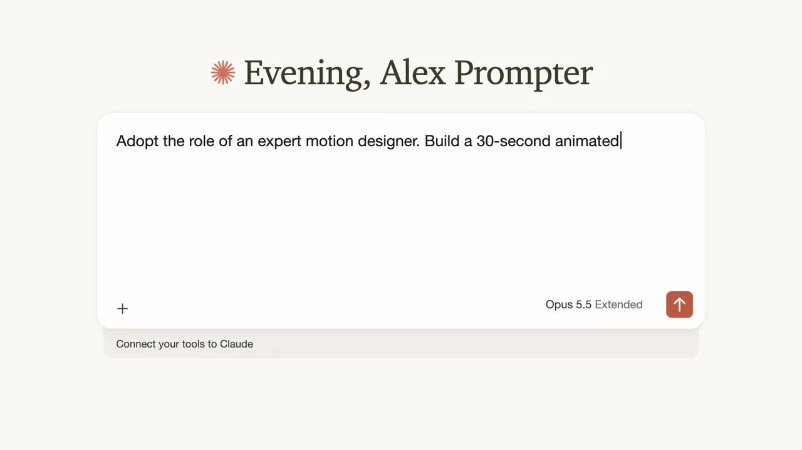
Adopt the role of an expert motion designer. Build a 30-second animated explainer for my business as a single HTML page. 5 scenes. The customer's problem, what I do, how it works in 3 steps, one proof point, and my name at the end. Bold text, smooth transitions, my brand colours. My business [DESCRIBE WHAT YOU SELL, WHO IT'S FOR AND YOUR COLOURS]中文译意：扮演一位资深动态设计师。用单个 HTML 页面为我的业务做一个 30 秒动画讲解片，5 个场景：客户的问题、我做什么、三步说明如何运作、一个证明点、结尾放我的名字。粗体文字、流畅转场、使用我的品牌色。我的业务：[描述你卖什么、卖给谁、你的品牌色]。
这是一个可直接替换方括号内容的模板式提示词。
Derivative concept explainer｜导数概念讲解（Manim）
请用Manim给我制作一个导数概念学习的视频，要求通俗易懂，并且有例子，引人思考。配音使用edge-tts原提示词即中文：用 Manim 做导数概念学习视频，要求通俗易懂、有例子、引人思考，配音用 edge-tts。站点标注技术栈为 Manim + edge-tts。
What is Git explainer｜什么是 Git
帮我用js制作一个视频，主题是：什么是Git
要深入浅出，让一个计算机0基础的人也能看得懂，然后要介绍一些常用指令的意思等等
要有声音的，然后是中文讲的
你可以用任何工具或者安装工具，可以联网检索原提示词即中文：用 JS 做一个「什么是 Git」的视频，深入浅出、零基础也能看懂，介绍常用指令；要有声音、用中文讲；可用任何工具、可安装工具、可联网检索。
Whiteboard skill tutorial｜白板风 Skill 教程
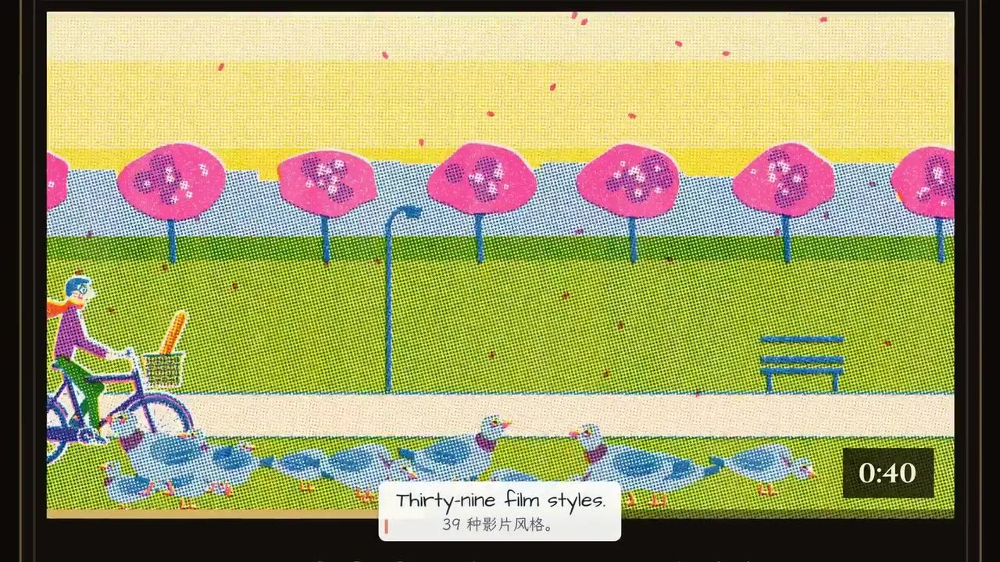
Create a tutorial video explaining how to create videos using Lemo-Opuscar skill (Opus 5.5) , in a [Whiteboard Explainer] style. One prompt, one answer, then ship film.中文译意：做一个教程视频，讲解如何用 Lemo-Opuscar skill（Opus 5.5）制作视频，采用「白板讲解」风格。一个提示词、一次回答，然后直接出片。
Lemo-Opuscar 的中文镜像见本站 lemo-opuscar/。
中文 / 3D / 其他语言的提示词
Porco Rosso sunset dogfight｜《红猪》日落空战（Three.js）
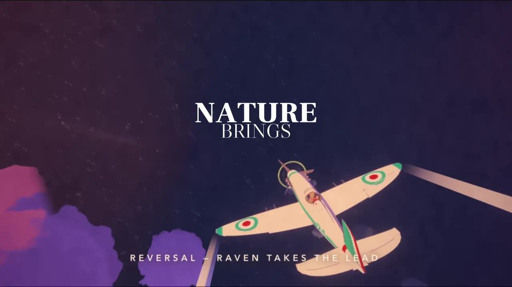
用 web3D 复刻宫崎骏《红猪》日落海面上的经典空战：白绿红涂装战斗机、紫色积云、海面反光、吉卜力运镜，画面写 just breathe.原提示词即中文：用 web3D 复刻宫崎骏《红猪》日落海面上的经典空战——白绿红涂装战斗机、紫色积云、海面反光、吉卜力运镜，画面写 “just breathe.”。技术栈 Three.js，一次成型。
Pelican riding a bicycle｜鹈鹕骑自行车
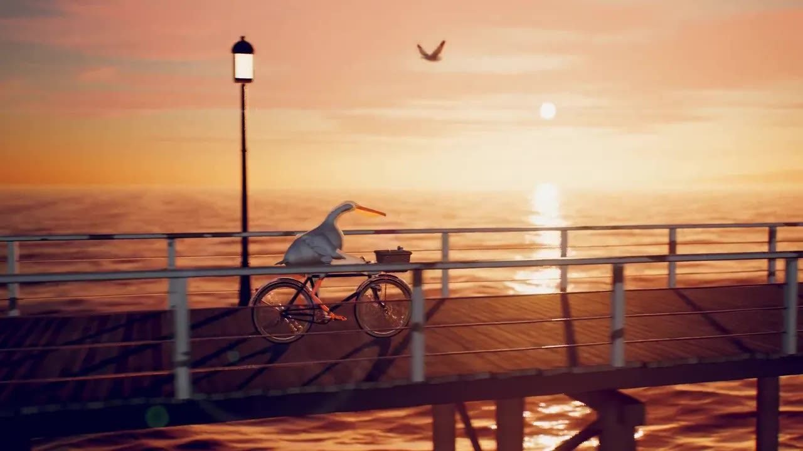
每次一个新的模型出来呢，大家都让它去画 “鹈鹕骑自行车” 来判断这个模型的空间能力，基本上都是用 HTML、SVG 来画动画。当我实在看得都有审美疲劳了，我希望你能画一个最复杂、最精细、最精美的 “鹈鹕骑自行车”的动画视频，你可以用任何的技术，不用着急，画一天都可以。原提示词即中文：大家常让新模型画「鹈鹕骑自行车」来测空间能力，基本都用 HTML/SVG；看腻了，希望画一个最复杂、最精细、最精美的「鹈鹕骑自行车」动画视频，可以用任何技术，「不用着急，画一天都可以」。一次成型。
Beat-synced bouncing 3D ball｜卡点 3D 小球（Three.js）
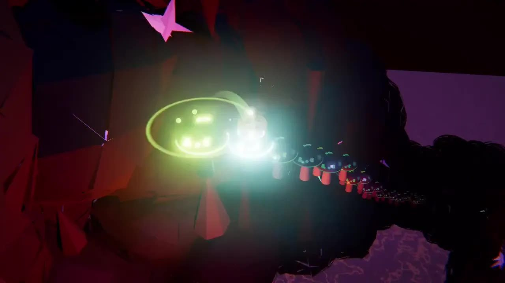
卡点的3D球体下坠的动画视频：对标专业的Blender做的效果，音乐是多首经典的纯音乐，场景按音乐切换，3D球体下坠时在3D场景的物件中弹跳，按音乐的节奏点亮物件。带一些幽默的元素。
使用three.js制作，不要使用Blender制作原提示词即中文：卡点的 3D 球体下坠动画，对标专业 Blender 效果；音乐为多首经典纯音乐，场景按音乐切换，球在场景物件间弹跳并按节奏点亮物件，带幽默元素；用 three.js 而不是 Blender 制作。
抓取时共有 18 条提示词含中文、日文或韩文，例如日文「シンまじん式のPV作って」（做一支「シンまじん式」宣传片）、「今日何曜日だっけ？」（用 30 秒带 BGM 的炫酷动态图形告诉我今天星期几），韩文请求按中秋（추석）元素做像素动画等。
四个 Skill
筛选「Skill」可看到 4 条以 skill 形式分享的作品——不是一句提示词，而是一套可安装到 Claude Code / 编程 agent 的工作流。
Cinetic skill launch film｜Cinetic：电影感发布片 skill
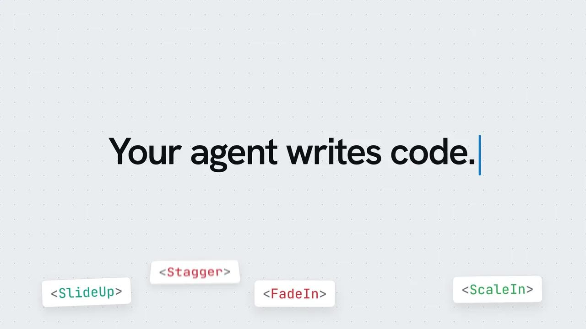
中文说明：一个 agent skill，让你的编程 agent 为产品构思概念、做品牌、配乐，并用代码渲染一支短的电影感发布片或动态作品。
npx skills add Leonxlnx/cinetic仓库：github.com/Leonxlnx/cinetic
Reddit marketing tool launch video｜product-film：产品发布片 skill（Remotion）
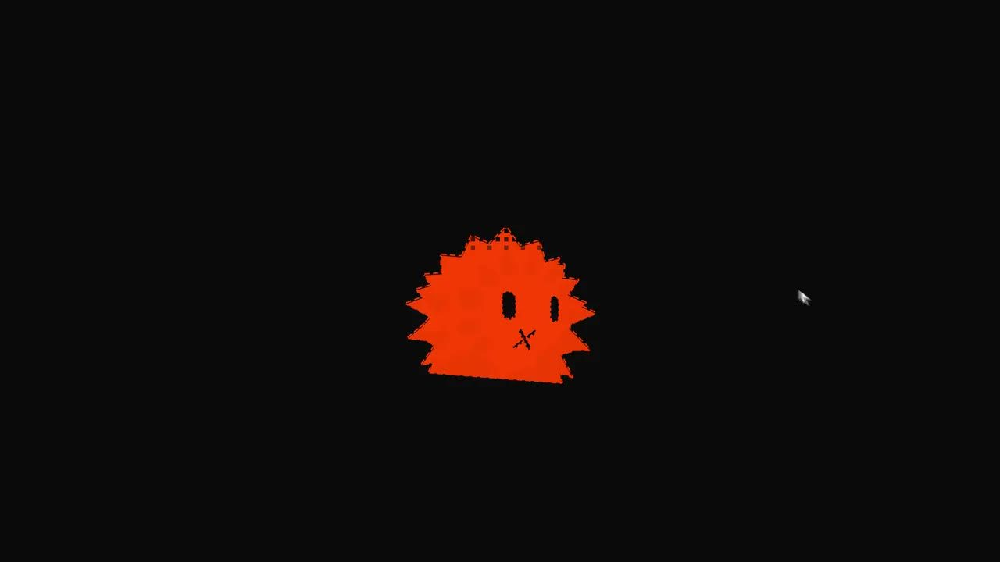
中文说明：一个 Claude Code skill：先学习你产品的设计系统、就影片内容采访你，然后用 Remotion 搭建并渲染发布视频或落地页视频，使用你真实的组件、Logo 和音乐。站点标注「多轮迭代」。
/plugin marketplace add Rieranthony/product-film-skill
/plugin install product-film@product-film-skill仓库：github.com/Rieranthony/product-film-skill
Animated agent session story｜session-story：把 agent 会话变成动画（HyperFrames）
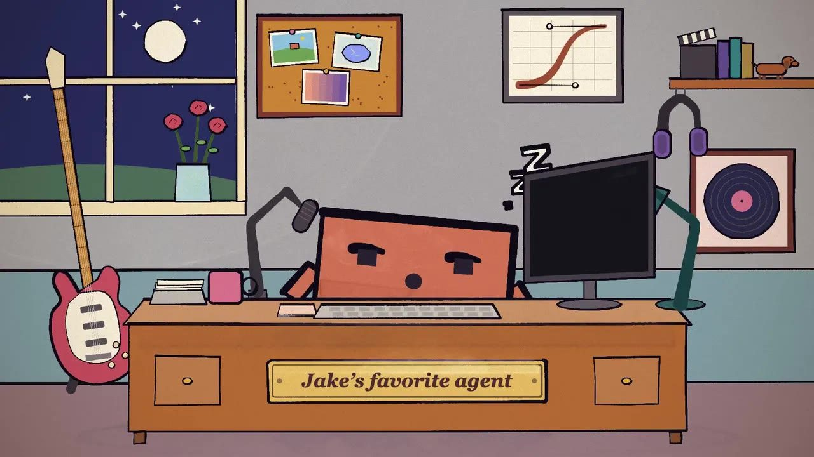
中文说明：让你的 agent 读取本地 Claude Code 历史，把你和它的一次典型会话变成一段有配乐的动画短片，用 HyperFrames 渲染。
npx skills add heygen-com/hyperframes-community-skills --skill session-story仓库：heygen-com/hyperframes-community-skills · session-story
Indian civilisation history film｜generative-film：任意主题动画 MP4 skill
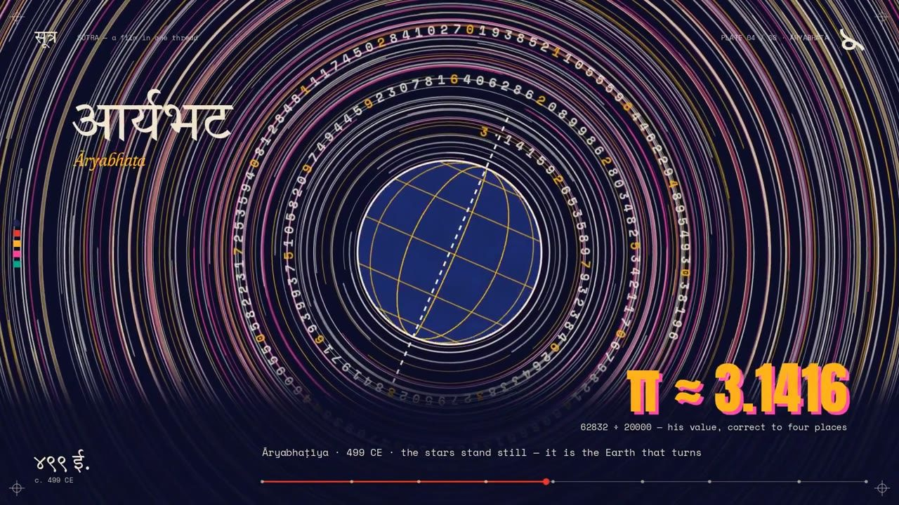
中文说明：这条同时带提示词和 skill。提示词：「generate a creative mp4 video on indian civilisation with music and sound effects.」（生成一段关于印度文明、带音乐和音效的创意 MP4 视频）。Skill：一个 Claude skill，为任意主题制作动画 MP4 短片，每一帧都用代码绘制，并合成与节拍同步的配乐。
npx skills@latest add https://github.com/buildfastwithai/buildfast-skills仓库：buildfast-skills · generative-film-skill
全部 233 条目录
按原站默认「Popular（热门）」顺序排列（抓取时），标题保留英文原文，点击跳转原条目观看视频与复制提示词。
背景：发布与反响
- 策展人 p4n（@p4nthera_）在 2026-10-06 02:26（UTC+8）发帖：「I built a growing gallery of motion graphics made with Claude Opus 5.5, each shown next to the prompt or skill that made it. 226 so far, all pulled from posts here and credited to their creators.」（我做了一个持续增长的画廊，收录用 Claude Opus 5.5 做的动态图形，每条都和制作它的提示词或 skill 并排展示。目前 226 条，全部取自 X 上的帖子并署名原作者。）抓取时该帖约 116 万浏览、9,778 赞、22,598 收藏。
- 此后陆续加入邮件订阅（10-07）和按标签筛选（10-08）；策展人在回复中说自己「不是专家，只是想把在推特上看到的视频放在一处，没想到会火」，并提到在考虑为每条视频加入复现结果、过滤掉不靠谱的提示词。
- 本站相关镜像：Lemo-Opuscar（39 种影片风格 skill）、Motion Graphics Music Video skill。